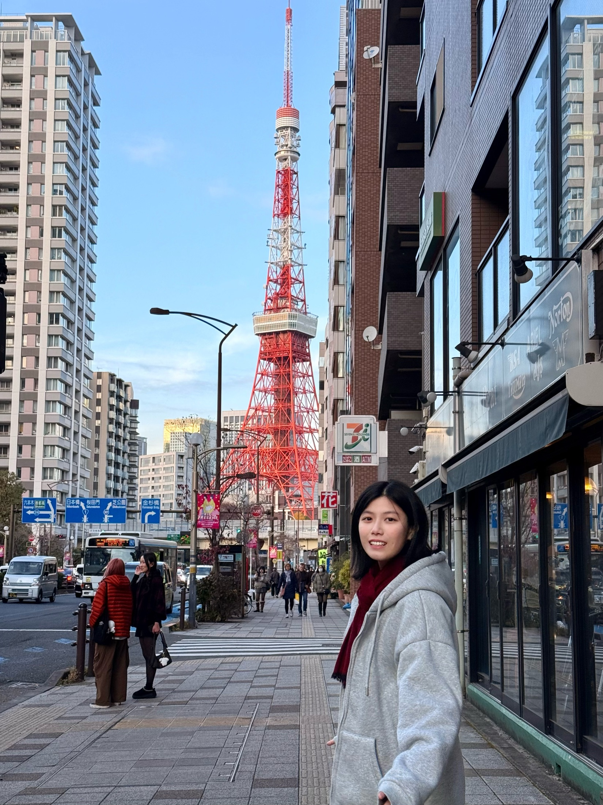

Business Psychology + Cognitive Neuroscience
Academic lens for understanding behavior before designing interfaces.
Lan Ye studies how cognition, emotion, and interaction design can reduce friction in decision-heavy moments, from anti-procrastination tools to emotional support systems.

Academic lens for understanding behavior before designing interfaces.
An anti-procrastination task tool built around cognitive load and initiation friction.
Anonymous emotional support with careful safety and identity-light interaction design.
Travel, street rhythm, and small daily behaviors become material for design thinking.
A UCSD designer focused on behavioral psychology, cognitive friction, and interaction systems that help people begin, decide, and recover with less pressure.
東京で見た、小さな行動のかたち。
UC San Diego, Business Psychology and Cognitive & Behavioral Neuroscience.
Available for UX research, interaction design, and behavior-centered product work.
Urban observation, route memory, and emotional texture as design inputs.
Reducing psychological resistance through micro-task decomposition.
Anonymous emotional support with identity-light, safety-first interaction.
Language production, bilingual processing, data annotation, and cognition.